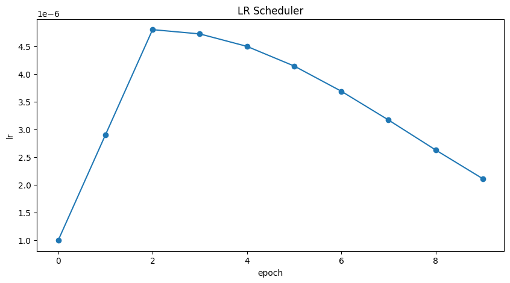
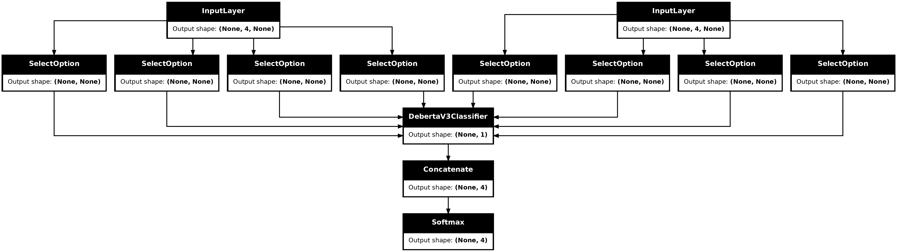

MultipleChoice Task with Transfer Learning
Author: Md Awsafur Rahman
Date created: 2023/09/14
Last modified: 2025/06/16
Description: Use pre-trained nlp models for multiplechoice task.

Introduction
In this example, we will demonstrate how to perform the MultipleChoice task by finetuning pre-trained DebertaV3 model. In this task, several candidate answers are provided along with a context and the model is trained to select the correct answer unlike question answering. We will use SWAG dataset to demonstrate this example.
Setup
import keras_hub
import keras
import tensorflow as tf # For tf.data only.
import numpy as np
import pandas as pd
import matplotlib.pyplot as plt
Dataset
In this example we'll use SWAG dataset for multiplechoice task.
!wget "https://github.com/rowanz/swagaf/archive/refs/heads/master.zip" -O swag.zip
!unzip -q swag.zip
--2023-11-13 20:05:24-- https://github.com/rowanz/swagaf/archive/refs/heads/master.zip
Resolving github.com (github.com)... 192.30.255.113
Connecting to github.com (github.com)|192.30.255.113|:443... connected.
HTTP request sent, awaiting response... 302 Found
Location: https://codeload.github.com/rowanz/swagaf/zip/refs/heads/master [following]
--2023-11-13 20:05:25-- https://codeload.github.com/rowanz/swagaf/zip/refs/heads/master
Resolving codeload.github.com (codeload.github.com)... 20.29.134.24
Connecting to codeload.github.com (codeload.github.com)|20.29.134.24|:443... connected.
HTTP request sent, awaiting response... 200 OK
Length: unspecified [application/zip]
Saving to: ‘swag.zip’
swag.zip [ <=> ] 19.94M 4.25MB/s in 4.7s
2023-11-13 20:05:30 (4.25 MB/s) - ‘swag.zip’ saved [20905751]
!ls swagaf-master/data
README.md test.csv train.csv train_full.csv val.csv val_full.csv
Configuration
class CFG:
preset = "deberta_v3_extra_small_en" # Name of pretrained models
sequence_length = 200 # Input sequence length
seed = 42 # Random seed
epochs = 5 # Training epochs
batch_size = 8 # Batch size
augment = True # Augmentation (Shuffle Options)
Reproducibility
Sets value for random seed to produce similar result in each run.
keras.utils.set_random_seed(CFG.seed)
Meta Data
- train.csv - will be used for training.
sent1andsent2: these fields show how a sentence starts, and if you put the two together, you get thestartphrasefield.ending_<i>: suggests a possible ending for how a sentence can end, but only one of them is correct. *label: identifies the correct sentence ending.
- val.csv - similar to
train.csvbut will be used for validation.
# Train data
train_df = pd.read_csv(
"swagaf-master/data/train.csv", index_col=0
) # Read CSV file into a DataFrame
train_df = train_df.sample(frac=0.02)
print("# Train Data: {:,}".format(len(train_df)))
# Valid data
valid_df = pd.read_csv(
"swagaf-master/data/val.csv", index_col=0
) # Read CSV file into a DataFrame
valid_df = valid_df.sample(frac=0.02)
print("# Valid Data: {:,}".format(len(valid_df)))
# Train Data: 1,471
# Valid Data: 400
Contextualize Options
Our approach entails furnishing the model with question and answer pairs, as opposed to
employing a single question for all five options. In practice, this signifies that for
the five options, we will supply the model with the same set of five questions combined
with each respective answer choice (e.g., (Q + A), (Q + B), and so on). This analogy
draws parallels to the practice of revisiting a question multiple times during an exam to
promote a deeper understanding of the problem at hand.
Notably, in the context of SWAG dataset, question is the start of a sentence and options are possible ending of that sentence.
# Define a function to create options based on the prompt and choices
def make_options(row):
row["options"] = [
f"{row.startphrase}\n{row.ending0}", # Option 0
f"{row.startphrase}\n{row.ending1}", # Option 1
f"{row.startphrase}\n{row.ending2}", # Option 2
f"{row.startphrase}\n{row.ending3}",
] # Option 3
return row
Apply the make_options function to each row of the dataframe
train_df = train_df.apply(make_options, axis=1)
valid_df = valid_df.apply(make_options, axis=1)
Preprocessing
What it does: The preprocessor takes input strings and transforms them into a
dictionary (token_ids, padding_mask) containing preprocessed tensors. This process
starts with tokenization, where input strings are converted into sequences of token IDs.
Why it's important: Initially, raw text data is complex and challenging for modeling
due to its high dimensionality. By converting text into a compact set of tokens, such as
transforming "The quick brown fox" into ["the", "qu", "##ick", "br", "##own", "fox"],
we simplify the data. Many models rely on special tokens and additional tensors to
understand input. These tokens help divide input and identify padding, among other tasks.
Making all sequences the same length through padding boosts computational efficiency,
making subsequent steps smoother.
Explore the following pages to access the available preprocessing and tokenizer layers in KerasHub: - Preprocessing - Tokenizers
preprocessor = keras_hub.models.DebertaV3Preprocessor.from_preset(
preset=CFG.preset, # Name of the model
sequence_length=CFG.sequence_length, # Max sequence length, will be padded if shorter
)
Now, let's examine what the output shape of the preprocessing layer looks like. The output shape of the layer can be represented as \((num\_choices, sequence\_length)\).
outs = preprocessor(train_df.options.iloc[0]) # Process options for the first row
# Display the shape of each processed output
for k, v in outs.items():
print(k, ":", v.shape)
CUDA backend failed to initialize: Found CUDA version 12010, but JAX was built against version 12020, which is newer. The copy of CUDA that is installed must be at least as new as the version against which JAX was built. (Set TF_CPP_MIN_LOG_LEVEL=0 and rerun for more info.)
token_ids : (4, 200)
padding_mask : (4, 200)
We'll use the preprocessing_fn function to transform each text option using the
dataset.map(preprocessing_fn) method.
def preprocess_fn(text, label=None):
text = preprocessor(text) # Preprocess text
return (
(text, label) if label is not None else text
) # Return processed text and label if available
Augmentation
In this notebook, we'll experiment with an interesting augmentation technique,
option_shuffle. Since we're providing the model with one option at a time, we can
introduce a shuffle to the order of options. For instance, options [A, C, E, D, B]
would be rearranged as [D, B, A, E, C]. This practice will help the model focus on the
content of the options themselves, rather than being influenced by their positions.
Note: Even though option_shuffle function is written in pure
tensorflow, it can be used with any backend (e.g. JAX, PyTorch) as it is only used
in tf.data.Dataset pipeline which is compatible with Keras 3 routines.
def option_shuffle(options, labels, prob=0.50, seed=None):
if tf.random.uniform([]) > prob: # Shuffle probability check
return options, labels
# Shuffle indices of options and labels in the same order
indices = tf.random.shuffle(tf.range(tf.shape(options)[0]), seed=seed)
# Shuffle options and labels
options = tf.gather(options, indices)
labels = tf.gather(labels, indices)
return options, labels
In the following function, we'll merge all augmentation functions to apply to the text.
These augmentations will be applied to the data using the dataset.map(augment_fn)
approach.
def augment_fn(text, label=None):
text, label = option_shuffle(text, label, prob=0.5) # Shuffle the options
return (text, label) if label is not None else text
DataLoader
The code below sets up a robust data flow pipeline using tf.data.Dataset for data
processing. Notable aspects of tf.data include its ability to simplify pipeline
construction and represent components in sequences.
To learn more about tf.data, refer to this
documentation.
def build_dataset(
texts,
labels=None,
batch_size=32,
cache=False,
augment=False,
repeat=False,
shuffle=1024,
):
AUTO = tf.data.AUTOTUNE # AUTOTUNE option
slices = (
(texts,)
if labels is None
else (texts, keras.utils.to_categorical(labels, num_classes=4))
) # Create slices
ds = tf.data.Dataset.from_tensor_slices(slices) # Create dataset from slices
ds = ds.cache() if cache else ds # Cache dataset if enabled
if augment: # Apply augmentation if enabled
ds = ds.map(augment_fn, num_parallel_calls=AUTO)
ds = ds.map(preprocess_fn, num_parallel_calls=AUTO) # Map preprocessing function
ds = ds.repeat() if repeat else ds # Repeat dataset if enabled
opt = tf.data.Options() # Create dataset options
if shuffle:
ds = ds.shuffle(shuffle, seed=CFG.seed) # Shuffle dataset if enabled
opt.experimental_deterministic = False
ds = ds.with_options(opt) # Set dataset options
ds = ds.batch(batch_size, drop_remainder=True) # Batch dataset
ds = ds.prefetch(AUTO) # Prefetch next batch
return ds # Return the built dataset
Now let's create train and valid dataloader using above function.
# Build train dataloader
train_texts = train_df.options.tolist() # Extract training texts
train_labels = train_df.label.tolist() # Extract training labels
train_ds = build_dataset(
train_texts,
train_labels,
batch_size=CFG.batch_size,
cache=True,
shuffle=True,
repeat=True,
augment=CFG.augment,
)
# Build valid dataloader
valid_texts = valid_df.options.tolist() # Extract validation texts
valid_labels = valid_df.label.tolist() # Extract validation labels
valid_ds = build_dataset(
valid_texts,
valid_labels,
batch_size=CFG.batch_size,
cache=True,
shuffle=False,
repeat=False,
augment=False,
)
LR Schedule
Implementing a learning rate scheduler is crucial for transfer learning. The learning
rate initiates at lr_start and gradually tapers down to lr_min using cosine
curve.
Importance: A well-structured learning rate schedule is essential for efficient model training, ensuring optimal convergence and avoiding issues such as overshooting or stagnation.
import math
def get_lr_callback(batch_size=8, mode="cos", epochs=10, plot=False):
lr_start, lr_max, lr_min = 1.0e-6, 0.6e-6 * batch_size, 1e-6
lr_ramp_ep, lr_sus_ep = 2, 0
def lrfn(epoch): # Learning rate update function
if epoch < lr_ramp_ep:
lr = (lr_max - lr_start) / lr_ramp_ep * epoch + lr_start
elif epoch < lr_ramp_ep + lr_sus_ep:
lr = lr_max
else:
decay_total_epochs, decay_epoch_index = (
epochs - lr_ramp_ep - lr_sus_ep + 3,
epoch - lr_ramp_ep - lr_sus_ep,
)
phase = math.pi * decay_epoch_index / decay_total_epochs
lr = (lr_max - lr_min) * 0.5 * (1 + math.cos(phase)) + lr_min
return lr
if plot: # Plot lr curve if plot is True
plt.figure(figsize=(10, 5))
plt.plot(
np.arange(epochs),
[lrfn(epoch) for epoch in np.arange(epochs)],
marker="o",
)
plt.xlabel("epoch")
plt.ylabel("lr")
plt.title("LR Scheduler")
plt.show()
return keras.callbacks.LearningRateScheduler(
lrfn, verbose=False
) # Create lr callback
_ = get_lr_callback(CFG.batch_size, plot=True)

Callbacks
The function below will gather all the training callbacks, such as lr_scheduler,
model_checkpoint.
def get_callbacks():
callbacks = []
lr_cb = get_lr_callback(CFG.batch_size) # Get lr callback
ckpt_cb = keras.callbacks.ModelCheckpoint(
f"best.keras",
monitor="val_accuracy",
save_best_only=True,
save_weights_only=False,
mode="max",
) # Get Model checkpoint callback
callbacks.extend([lr_cb, ckpt_cb]) # Add lr and checkpoint callbacks
return callbacks # Return the list of callbacks
callbacks = get_callbacks()
MultipleChoice Model
Pre-trained Models
The KerasHub library provides comprehensive, ready-to-use implementations of popular
NLP model architectures. It features a variety of pre-trained models including Bert,
Roberta, DebertaV3, and more. In this notebook, we'll showcase the usage of
DistillBert. However, feel free to explore all available models in the KerasHub
documentation. Also for a deeper understanding
of KerasHub, refer to the informative getting started
guide.
Our approach involves using keras_hub.models.XXClassifier to process each question and
option pari (e.g. (Q+A), (Q+B), etc.), generating logits. These logits are then combined
and passed through a softmax function to produce the final output.
Classifier for Multiple-Choice Tasks
When dealing with multiple-choice questions, instead of giving the model the question and
all options together (Q + A + B + C ...), we provide the model with one option at a
time along with the question. For instance, (Q + A), (Q + B), and so on. Once we have
the prediction scores (logits) for all options, we combine them using the Softmax
function to get the ultimate result. If we had given all options at once to the model,
the text's length would increase, making it harder for the model to handle. The picture
below illustrates this idea:

From a coding perspective, remember that we use the same model for all five options, with shared weights. Despite the figure suggesting five separate models, they are, in fact, one model with shared weights. Another point to consider is the the input shapes of Classifier and MultipleChoice.
- Input shape for Multiple Choice: \((batch\_size, num\_choices, seq\_length)\)
- Input shape for Classifier: \((batch\_size, seq\_length)\)
Certainly, it's clear that we can't directly give the data for the multiple-choice task to the model because the input shapes don't match. To handle this, we'll use slicing. This means we'll separate the features of each option, like \(feature_{(Q + A)}\) and \(feature_{(Q + B)}\), and give them one by one to the NLP classifier. After we get the prediction scores \(logits_{(Q + A)}\) and \(logits_{(Q + B)}\) for all the options, we'll use the Softmax function, like \(\operatorname{Softmax}([logits_{(Q + A)}, logits_{(Q + B)}])\), to combine them. This final step helps us make the ultimate decision or choice.
Note that in the classifier, we set
num_classes=1instead of5. This is because the classifier produces a single output for each option. When dealing with five options, these individual outputs are joined together and then processed through a softmax function to generate the final result, which has a dimension of5.
# Selects one option from five
class SelectOption(keras.layers.Layer):
def __init__(self, index, **kwargs):
super().__init__(**kwargs)
self.index = index
def call(self, inputs):
# Selects a specific slice from the inputs tensor
return inputs[:, self.index, :]
def get_config(self):
# For serialize the model
base_config = super().get_config()
config = {
"index": self.index,
}
return {**base_config, **config}
def build_model():
# Define input layers
inputs = {
"token_ids": keras.Input(shape=(4, None), dtype="int32", name="token_ids"),
"padding_mask": keras.Input(
shape=(4, None), dtype="int32", name="padding_mask"
),
}
# Create a DebertaV3Classifier model
classifier = keras_hub.models.DebertaV3Classifier.from_preset(
CFG.preset,
preprocessor=None,
num_classes=1, # one output per one option, for five options total 5 outputs
)
logits = []
# Loop through each option (Q+A), (Q+B) etc and compute associated logits
for option_idx in range(4):
option = {
k: SelectOption(option_idx, name=f"{k}_{option_idx}")(v)
for k, v in inputs.items()
}
logit = classifier(option)
logits.append(logit)
# Compute final output
logits = keras.layers.Concatenate(axis=-1)(logits)
outputs = keras.layers.Softmax(axis=-1)(logits)
model = keras.Model(inputs, outputs)
# Compile the model with optimizer, loss, and metrics
model.compile(
optimizer=keras.optimizers.AdamW(5e-6),
loss=keras.losses.CategoricalCrossentropy(label_smoothing=0.02),
metrics=[
keras.metrics.CategoricalAccuracy(name="accuracy"),
],
jit_compile=True,
)
return model
# Build the Build
model = build_model()
Let's checkout the model summary to have a better insight on the model.
model.summary()
Model: "functional_1"
┏━━━━━━━━━━━━━━━━━━━━━┳━━━━━━━━━━━━━━━━━━━┳━━━━━━━━━┳━━━━━━━━━━━━━━━━━━━━━━┓ ┃ Layer (type) ┃ Output Shape ┃ Param # ┃ Connected to ┃ ┡━━━━━━━━━━━━━━━━━━━━━╇━━━━━━━━━━━━━━━━━━━╇━━━━━━━━━╇━━━━━━━━━━━━━━━━━━━━━━┩ │ padding_mask │ (None, 4, None) │ 0 │ - │ │ (InputLayer) │ │ │ │ ├─────────────────────┼───────────────────┼─────────┼──────────────────────┤ │ token_ids │ (None, 4, None) │ 0 │ - │ │ (InputLayer) │ │ │ │ ├─────────────────────┼───────────────────┼─────────┼──────────────────────┤ │ padding_mask_0 │ (None, None) │ 0 │ padding_mask[0][0] │ │ (SelectOption) │ │ │ │ ├─────────────────────┼───────────────────┼─────────┼──────────────────────┤ │ token_ids_0 │ (None, None) │ 0 │ token_ids[0][0] │ │ (SelectOption) │ │ │ │ ├─────────────────────┼───────────────────┼─────────┼──────────────────────┤ │ padding_mask_1 │ (None, None) │ 0 │ padding_mask[0][0] │ │ (SelectOption) │ │ │ │ ├─────────────────────┼───────────────────┼─────────┼──────────────────────┤ │ token_ids_1 │ (None, None) │ 0 │ token_ids[0][0] │ │ (SelectOption) │ │ │ │ ├─────────────────────┼───────────────────┼─────────┼──────────────────────┤ │ padding_mask_2 │ (None, None) │ 0 │ padding_mask[0][0] │ │ (SelectOption) │ │ │ │ ├─────────────────────┼───────────────────┼─────────┼──────────────────────┤ │ token_ids_2 │ (None, None) │ 0 │ token_ids[0][0] │ │ (SelectOption) │ │ │ │ ├─────────────────────┼───────────────────┼─────────┼──────────────────────┤ │ padding_mask_3 │ (None, None) │ 0 │ padding_mask[0][0] │ │ (SelectOption) │ │ │ │ ├─────────────────────┼───────────────────┼─────────┼──────────────────────┤ │ token_ids_3 │ (None, None) │ 0 │ token_ids[0][0] │ │ (SelectOption) │ │ │ │ ├─────────────────────┼───────────────────┼─────────┼──────────────────────┤ │ deberta_v3_classif… │ (None, 1) │ 70,830… │ padding_mask_0[0][0… │ │ (DebertaV3Classifi… │ │ │ token_ids_0[0][0], │ │ │ │ │ padding_mask_1[0][0… │ │ │ │ │ token_ids_1[0][0], │ │ │ │ │ padding_mask_2[0][0… │ │ │ │ │ token_ids_2[0][0], │ │ │ │ │ padding_mask_3[0][0… │ │ │ │ │ token_ids_3[0][0] │ ├─────────────────────┼───────────────────┼─────────┼──────────────────────┤ │ concatenate │ (None, 4) │ 0 │ deberta_v3_classifi… │ │ (Concatenate) │ │ │ deberta_v3_classifi… │ │ │ │ │ deberta_v3_classifi… │ │ │ │ │ deberta_v3_classifi… │ ├─────────────────────┼───────────────────┼─────────┼──────────────────────┤ │ softmax (Softmax) │ (None, 4) │ 0 │ concatenate[0][0] │ └─────────────────────┴───────────────────┴─────────┴──────────────────────┘
Total params: 70,830,337 (270.20 MB)
Trainable params: 70,830,337 (270.20 MB)
Non-trainable params: 0 (0.00 B)
Finally, let's check the model structure visually if everything is in place.
keras.utils.plot_model(model, show_shapes=True)

Training
# Start training the model
history = model.fit(
train_ds,
epochs=CFG.epochs,
validation_data=valid_ds,
callbacks=callbacks,
steps_per_epoch=int(len(train_df) / CFG.batch_size),
verbose=1,
)
Epoch 1/5
183/183 ━━━━━━━━━━━━━━━━━━━━ 5087s 25s/step - accuracy: 0.2563 - loss: 1.3884 - val_accuracy: 0.5150 - val_loss: 1.3742 - learning_rate: 1.0000e-06
Epoch 2/5
183/183 ━━━━━━━━━━━━━━━━━━━━ 4529s 25s/step - accuracy: 0.3825 - loss: 1.3364 - val_accuracy: 0.7125 - val_loss: 0.9071 - learning_rate: 2.9000e-06
Epoch 3/5
183/183 ━━━━━━━━━━━━━━━━━━━━ 4524s 25s/step - accuracy: 0.6144 - loss: 1.0118 - val_accuracy: 0.7425 - val_loss: 0.8017 - learning_rate: 4.8000e-06
Epoch 4/5
183/183 ━━━━━━━━━━━━━━━━━━━━ 4522s 25s/step - accuracy: 0.6744 - loss: 0.8460 - val_accuracy: 0.7625 - val_loss: 0.7323 - learning_rate: 4.7230e-06
Epoch 5/5
183/183 ━━━━━━━━━━━━━━━━━━━━ 4517s 25s/step - accuracy: 0.7200 - loss: 0.7458 - val_accuracy: 0.7750 - val_loss: 0.7022 - learning_rate: 4.4984e-06
Inference
# Make predictions using the trained model on last validation data
predictions = model.predict(
valid_ds,
batch_size=CFG.batch_size, # max batch size = valid size
verbose=1,
)
# Format predictions and true answers
pred_answers = np.arange(4)[np.argsort(-predictions)][:, 0]
true_answers = valid_df.label.values
# Check 5 Predictions
print("# Predictions\n")
for i in range(0, 50, 10):
row = valid_df.iloc[i]
question = row.startphrase
pred_answer = f"ending{pred_answers[i]}"
true_answer = f"ending{true_answers[i]}"
print(f"❓ Sentence {i+1}:\n{question}\n")
print(f"✅ True Ending: {true_answer}\n >> {row[true_answer]}\n")
print(f"🤖 Predicted Ending: {pred_answer}\n >> {row[pred_answer]}\n")
print("-" * 90, "\n")
50/50 ━━━━━━━━━━━━━━━━━━━━ 274s 5s/step
# Predictions
❓ Sentence 1:
The man shows the teens how to move the oars. The teens
✅ True Ending: ending3
>> follow the instructions of the man and row the oars.
🤖 Predicted Ending: ending3
>> follow the instructions of the man and row the oars.
------------------------------------------------------------------------------------------
❓ Sentence 11:
A lake reflects the mountains and the sky. Someone
✅ True Ending: ending2
>> runs along a desert highway.
🤖 Predicted Ending: ending1
>> remains by the door.
------------------------------------------------------------------------------------------
❓ Sentence 21:
On screen, she smiles as someone holds up a present. He watches somberly as on screen, his mother
✅ True Ending: ending1
>> picks him up and plays with him in the garden.
🤖 Predicted Ending: ending0
>> comes out of her apartment, glowers at her laptop.
------------------------------------------------------------------------------------------
❓ Sentence 31:
A woman in a black shirt is sitting on a bench. A man
✅ True Ending: ending2
>> sits behind a desk.
🤖 Predicted Ending: ending0
>> is dancing on a stage.
------------------------------------------------------------------------------------------
❓ Sentence 41:
People are standing on sand wearing red shirts. They
✅ True Ending: ending3
>> are playing a game of soccer in the sand.
🤖 Predicted Ending: ending3
>> are playing a game of soccer in the sand.
------------------------------------------------------------------------------------------
Reference
- Multiple Choice with HF
- Keras NLP
- BirdCLEF23: Pretraining is All you Need [Train] [Train]](https://www.kaggle.com/code/awsaf49/birdclef23-pretraining-is-all-you-need-train)
- Triple Stratified KFold with TFRecords